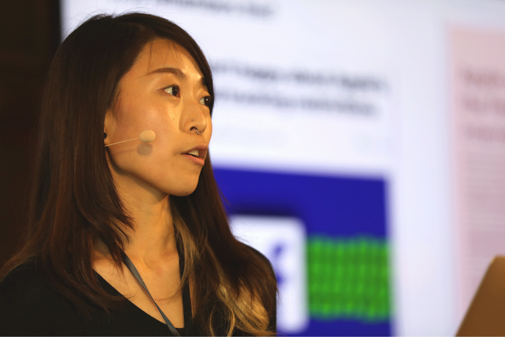
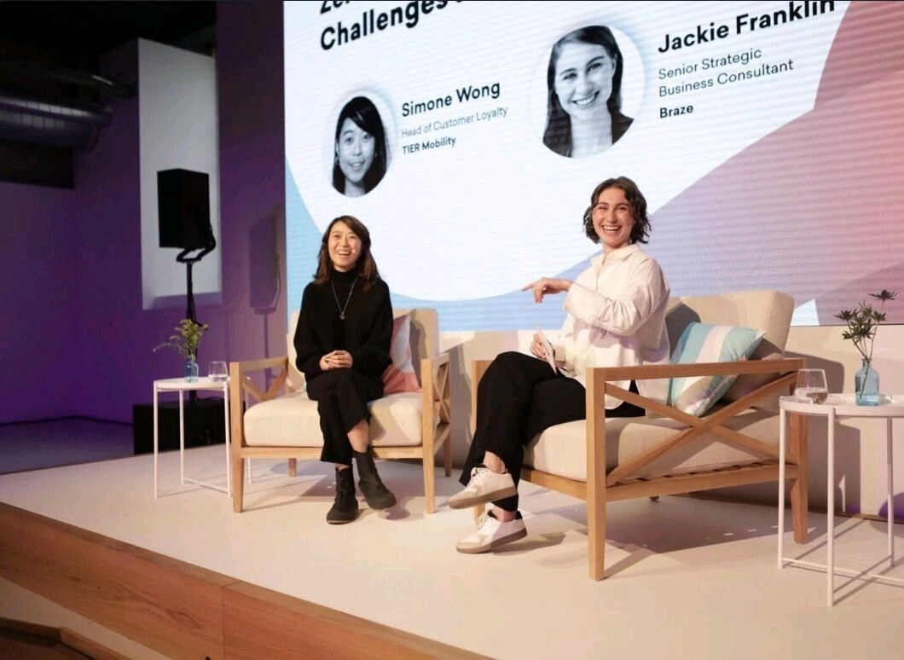

Simone Wong
I'm a CRM and Lifecycle Marketing consultant in Berlin, with 10+ years across retention and mobile app growth. Equal parts tech and psychology, and happiest on products that drive positive behavioural change.
Available for new projects


About
Your users stay where they feel understood.
If your retention problem isn't a discount problem, it's probably a connection problem. I bring a psychology background to your lifecycle programme: I start from why your users actually behave, then use your numbers to prove it's working.
Anyone can generate competent copy now. What your users notice is a message that feels like a person wrote it to them. That's what I build for you: communication that feels warm instead of hollow, in every channel you own.
What I do
From the first push notification to the retention roadmap.
I do CRM for B2C apps and subscription products, where retention is revenue. CRM lives where Product, Tech and Marketing meet, and I'm at home in all three: shaping onboarding with PMs, briefing event tracking with engineers, and writing in your brand's voice. I build the flows and set the strategy, so less gets lost between the roadmap and what actually reaches your users.
-
01 · Set the direction
Strategy
- Retention roadmaps by lifecycle stage: trial, activation, at-risk and win-back.
- Behavioural segmentation and one framework across every channel.
- Platform evaluation and migration, and processes your team can keep running.
-
02 · Build and ship
Execution
- Lifecycle flows across the funnel: onboarding, trial, activation, renewal and win-back.
- Campaigns across email, push, in-app and content cards, in your brand voice.
- Modular templates, segmentation and Liquid personalisation, QA'd before every send.
-
03 · Test and improve
Optimisation
- A/B tests on message, send time, cadence and channel mix.
- Offers and push cadence that convert, without fatiguing users or training them to wait for a deal.
- Deliverability, and KPIs that show retention impact beyond opens and clicks.
Where I do my best work
Strategy that ships.
The person writing your retention roadmap is the one building the journeys, so plans stay grounded in your stack, your data and your team's real capacity.
I'm likely a good fit if:
- You need someone to own the lifecycle.
- You have a strategy, but not the capacity to execute it.
- Your CRM is live, but nobody has audited what's working.
- You're hiring in-house and want them to inherit a solid foundation.
Projects
All projects →Working together
Pick your relationship status.
Good CRM is a long game, and so is a good working relationship. Choose how involved you'd like me to be. We can always level up later, and nobody gets ghosted.
-
01 · Retainer
In it for the long run.
I look after your CRM week to week: the sends, the roadmap and the numbers behind them. Your CRM lead, without the six-month hiring process.
-
02 · Project
Clear scope, happy ending.
A lifecycle audit, a flow rebuild, a platform migration or a testing programme. Agreed up front, done properly and handed over cleanly.
-
03 · Advisory
The friend with opinions.
Regular sessions with your team to pressure-test the strategy, review work before it ships and get stuck decisions moving again.
First call's a getting-to-know-you, not a pitch.
Research
All papers →Different topics, one thread: how technology changes the way we think, connect and feel. It's the question that got me into this work, and it still is.
Off the clock
Tab 4 of 4Work's done for the day. Flip the switch.